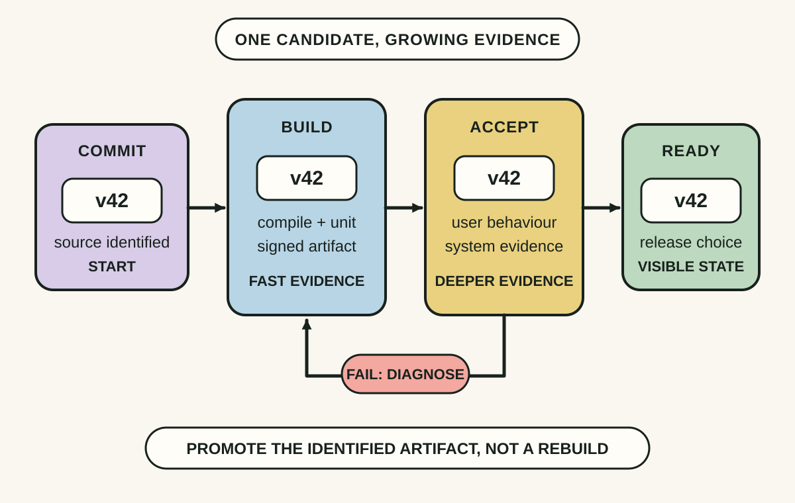
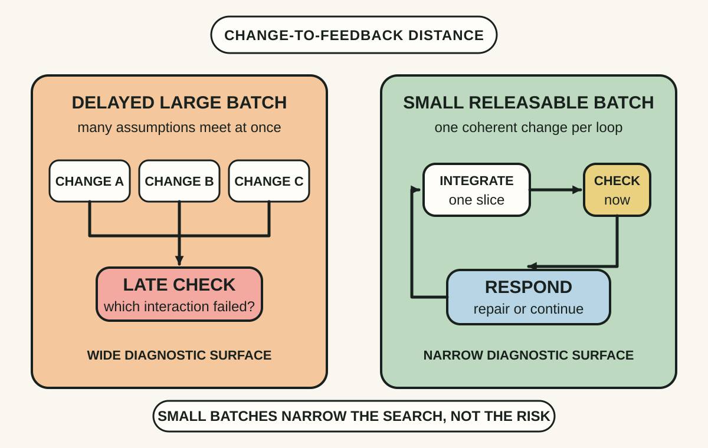
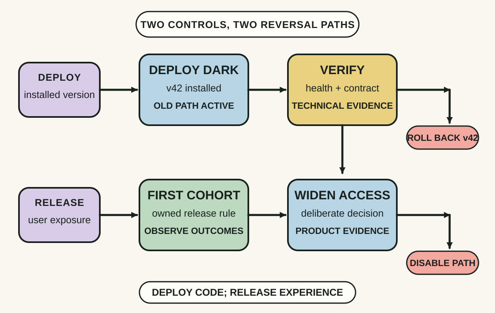

Daily lesson ·
Continuous Delivery
Make releases routine by turning the path from commit to production into a visible evidence pipeline, integrating in small batches and deciding separately when deployed capability becomes available to users.
Idea 1
Make the path to release executable #
The idea
Humble and Farley place the deployment pipeline at the centre of continuous delivery. It models the value stream from a version-control change to a release candidate, then automates the build, tests, environment promotion and deployment steps that can be repeated reliably.
Each stage adds evidence about the same candidate. Fast checks reject obvious problems early; slower acceptance, performance, security and exploratory work follow when appropriate. The pipeline makes the state of a change visible, including which version passed which checks and what is running in each environment.

Why it matters
A visible, repeatable path reduces release-day improvisation. Developers, testers, operations and product people can discuss the same candidate and see which uncertainty remains instead of relying on hand-offs or memory.
Apply it today
Choose one recent production version and trace the exact jobs, approvals and manual steps it crossed after commit.
Write the evidence produced by each step, such as a signed artifact, acceptance result or deployment record.
Circle the first step that can silently rebuild, mutate or lose the identity of the candidate.
Caveat or failure mode
A green pipeline is evidence, not proof. It can automate weak tests, hide flaky gates or omit accessibility, data migration, security and operational checks. Keep exploratory judgement where uncertainty remains, and retire stages that add delay without useful information.
Idea 2
Keep change batches small and releasable #
The idea
Continuous delivery extends continuous integration beyond a successful build. Team members integrate frequently into a shared mainline, fix a broken build immediately and keep the application in a state that could be released when the business chooses.
Small batches shorten the distance between a change and its feedback. When a check fails, fewer interacting edits compete as possible causes. This discipline depends on tests, configuration and database changes evolving with the code rather than being assembled during a late release phase.

Why it matters
Frequent integration exposes incompatibility while the relevant context is still fresh. The team spends less time reconstructing a large merge or release, and product decisions are not forced to wait for a technical batching event.
Apply it today
Look at one item currently expected to stay on a branch or behind a hand-off for several days.
Identify the smallest coherent change that can reach main while preserving current user behaviour.
Write the check or containment mechanism that would make integrating that slice responsible today.
Caveat or failure mode
Small batches reduce diagnostic scope but do not remove system coupling or coordination needs. Hardware, regulated evidence packs, shared schemas and long-running migrations can impose real batch boundaries. Shrink what can be shrunk and make the remaining boundary explicit rather than declaring every domain identical.
Idea 3
Separate deployment from release #
The idea
Humble and Farley distinguish making a tested version available in an environment from choosing when users receive its behaviour. A repeatable deployment can place capability in production without exposing it immediately, while configuration or a release control governs availability.
This separation gives product and operations people choices beyond a single high-stakes launch. A team can deploy during a calm window, verify the dormant path, enable it for a bounded cohort and reverse exposure without rebuilding the application.

Why it matters
When installation and exposure are one irreversible event, technical and product uncertainty arrive together. Separate controls can limit blast radius, schedule user communication deliberately and make a rollback target clearer.
Apply it today
Name one upcoming capability and write the technical event that would deploy it.
Separately write the rule that would expose it to a user or cohort.
For both controls, record one observable check and the fastest responsible reversal.
Caveat or failure mode
Release controls add paths that must be tested, observed and removed. Long-lived flags become configuration debt, can expose forbidden combinations and may not protect irreversible data changes. Use them deliberately, secure the control plane and set an owner and removal condition.
Knowledge check · 6 questions
Learning check
Answer all 6, then check your answers. Your first result stays in this browser, and each explanation appears after you check. A 3-question review can appear on the homepage from tomorrow.
6 questions not yet answered.
Today's experiment · 10 minutes
Draw one release path
- Choose the most recent production change and write its commit or artifact identifier at the left of a page.
- Draw every automated gate, manual hand-off and rebuild it crossed before users received it.
- Mark where evidence was added, where candidate identity could change and where deployment was coupled to user release.
- Choose one gap that the team could make visible or repeatable in the next release.
Observable result: You finish with a concrete release-path map and one named improvement whose effect can be observed on the next candidate.
Retrieval practice
Spaced recall
- From Release It!: which control would limit the blast radius if a newly released path overloads a dependency?
- From Refactoring: how could one verified structural step make a pending pipeline change easier to review?
- From Accelerate: which delivery measures would reveal whether a smaller-batch experiment improved both speed and stability?
Verification
Source notes
These links support the attributed claims and edition details; applications and extensions are labelled in the lesson.
- Jez Humble: Continuous Delivery book announcement and deployment-pipeline overview
- Addison-Wesley Professional: Continuous Delivery publication and edition record
- Humble and Farley: Anatomy of the Deployment Pipeline
- Martin Fowler: Continuous Delivery and the path from integration to production
- Continuous Delivery: continuous integration foundations
- Martin Fowler: feature toggles and separating release from deployment
One-sentence takeaway